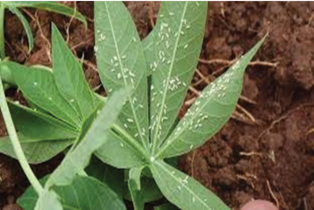
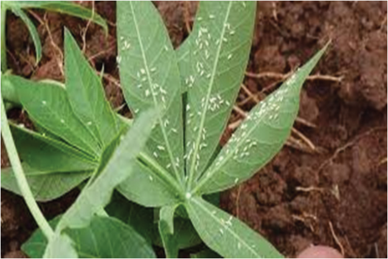

Agriculture for Secondary Schools
Figure 3.8: Whiteflies on cassava leaf
Source: https://www.mpg.de/15470351/whiteflies-detoxify-plant-defenses
(d) Variegated grasshopper: A striking insect known for its vivid colour
(Figure 3.9). When threatened by an enemy, it produces an unpleasant
smell as a defensive mechanism.
Symptoms: Cassava leaves may have irregular holes or chewed edges due to the
grasshoppers’ feeding habits.
Management: Variegated grasshoppers can be managed by removing weeds and
plant debris around cassava fields to reduce grasshopper breeding sites. Some
farmers control pests manually by removing them from cassava plants and killing
them. Intercropping or planting crops that are less attractive to them can help
to manage the disease. It is recommended to consult agricultural experts for
appropriate insecticides against variegated grasshoppers.
52
Student’s Book Form Two